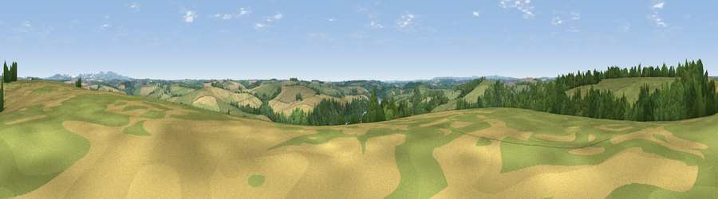

Viewpoint near Tresillian
#22313 in England · top 43% of its area beats it · near Tresillian · path 155 mWhere it is
The exact computed spot (SW 85975 46375). Click the marker for map links.
Public access: the nearest public right of way is about 155 m away — the final stretch may cross private land. Computed from Natural England's CRoW access layer and OpenStreetMap rights of way — not the legal definitive map. Always verify locally.
The view, rendered

A 360° render of this exact spot computed from the terrain model, tree cover and land cover — summer colours, afternoon light, calibrated against photographs of famous viewpoints. Real trees, hedges and buildings will differ in detail.
The panorama
Grey silhouette: terrain skyline in each direction (720 bearings, Earth curvature and refraction included). Dashed green: skyline with trees (+15 m) and buildings (+8 m) as obstacles. Blue strip: how far the ground is visible on each bearing.
Where the view opens
Wedge length = distance to the farthest visible ground on that bearing (vegetation-aware). Rings at 10, 25 and 50 km.
What fills the view
49% grassland · 25% woodland · 21% cropland · 3% water · 1% built-up ·
Angular shares of the visible panorama (visual magnitude), not map area. Landscape diversity 0.53 (0–1 Shannon).
Key numbers
More beautiful places nearby
The staircase of upgrades: each row has a higher view potential than everything closer. Driving times are estimates from straight-line distance, calibrated against real road routing — check an actual route before setting out.
| Place | Direction | Drive | Score |
|---|---|---|---|
| Viewpoint near St. Michael Penkevil | SSE · 4 km | ~9 min | 50.0 |
| Viewpoint near Ruan Lanihorne | SSE · 5 km | ~10 min | 51.0 |
| Viewpoint near Trispen | N · 7 km | ~15 min | 58.5 |
| Viewpoint near St. Newlyn East | NNW · 8 km | ~15 min | 70.6 |
| Curgurrell Hill | SSE · 9 km | ~18 min | 71.5 |
| Viewpoint near Trethosa | NE · 10 km | ~20 min | 78.5 |
| Viewpoint near Penhale | NNE · 11 km | ~21 min | 81.7 |
| Viewpoint near Foxhole | NE · 14 km | ~25 min | 84.3 |
50.27845, -5.00528 · source: screening · position refined by local search. Computed location — check access rights before visiting.